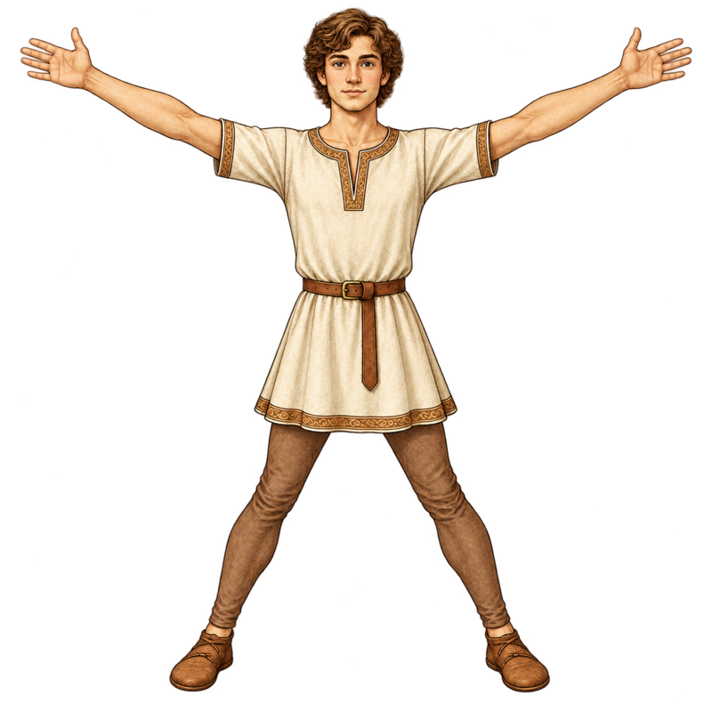
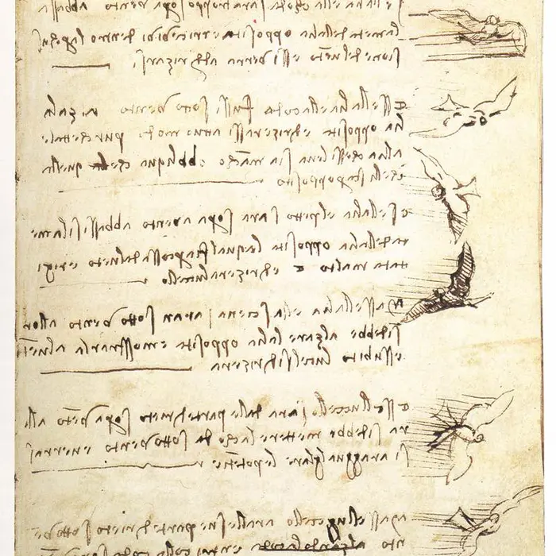
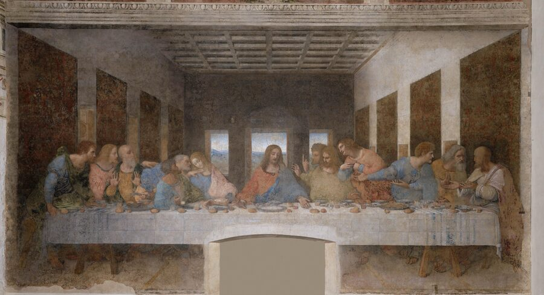

Complex Systems & Humanities · Civilizations, Eras & Ideas
Leonardo da Vinci
Notebooks of a Universal Mind
Leonardo kept roughly 13,000 pages of notes and sketches, of which about 7,200 survive — anatomy studies beside flying machines beside grocery lists, all in the same restless hand. He refused to separate art from science: both were disciplines of looking closely and drawing what you actually see, not what you expect to see.
Observation as methodAnatomy & proportionUnbuilt machinesMirror writing
Big Idea
Leonardo's notebooks are a single connected system of inquiry, not separate "art" and "science" folders. The same skill — recording exactly what the eye observes, then testing it against a rule or a sketch — produced the Mona Lisa's shading, a dissected heart valve, and a design for a mechanical wing.
The Vitruvian Man: Test Your Own Proportions
Around 1490, Leonardo explored the Roman architect Vitruvius's proposed body ratios. This fully clothed classroom model lets you compare arm span with height. Use fictional measurements or measure only if you choose. Bodies vary; a ratio is a mathematical description, not a judgment about health, beauty, or worth.
Square stanceCircle stance
Arm-span-to-height ratio: 1.00 —
close to 1:1 in this model; real proportions vary.
What Vitruvius claimed (De Architectura, c. 15 BCE):
Outstretched arm span ≈ standing height (a square)
Height from hairline to chin ≈ 1/10 of total height
Length of the hand ≈ 1/10 of total height
The navel is the natural center point of a person standing with arms and legs spread — the center of the circle

Classroom proportion illustration inspired by Leonardo's study. This original fully clothed drawing is not a reproduction of Vitruvian Man. Compare the span of the arms with the standing height in the interactive model above. Credit: ClassroomOS classroom illustration.
Decode the Mirror Writing
Almost all of Leonardo's private notes run right to left, with each letter reversed — legible only when held up to a mirror. He was left-handed, and writing this way let his hand trail across the page instead of dragging through wet ink and smudging it. It may also have simply been the fastest, most natural motion for a left-handed writer schooled without much formal training. Type below and see your own words turned into his script.
Try it: hold a real mirror up to your screen (or flip a printout) and the reversed text above will read correctly left to right. This is exactly how a curious visitor to Leonardo's workshop would have had to read his notes.
Codex of Unbuilt Machines
Leonardo used drawings to explore mechanisms, but a drawing alone does not establish that a machine works. Compare six designs and ask what force, energy source, or material each requires. The moving sketches below are illustrations, not flight tests or evidence that the original machines were built.
c. 1489
Aerial Screw
A helical linen surface driven around a shaft by people. The proposal explored rotary flight, but a rotating shape needs enough power to generate lift greater than the weight of the entire machine.
✗ Would not have flown
c. 1485
Ornithopter
A flying machine with wings flapped by human arm and leg power, modeled directly on bat and bird wing anatomy he had dissected.
✗ Human-powered flapping design faces major power and weight limits
c. 1485
Pyramid Parachute
A rigid, sealed-linen pyramid meant to let a person "throw himself down from any great height without injury."
✓ Confirmed — a skydiver built and jumped one safely in 2000
c. 1487
Armored Fighting Vehicle
A cone-shaped wooden shell bristling with cannons, moved by a hand-cranked gear system inside.
✗ Its own gearing was drawn to jam itself — likely intentional sabotage-proofing
c. 1502
Single-Span Bridge for the Sultan
A proposed 240-meter flattened arch bridge across the Golden Horn, designed to be the longest single span in the world.
✓ Confirmed — a scaled footbridge built in Norway in 2001 stood on his design
c. 1478
Self-Propelled Cart
A programmable wooden cart driven by coiled leaf springs, with a steering peg system that could be set to follow a preset path.
✓ Confirmed — engineers built a working replica in 2004

Leonardo da Vinci, Codex on the Flight of Birds (c. 1505). Biblioteca Reale, Turin. Leonardo recorded aerodynamic observations of gliding birds, noting wing curvature, bone joints, and center-of-gravity shifts centuries before aeronautical science. Click to enlarge. Credit: Wikimedia Commons · Public domain.Leonardo da Vinci, Aerial Screw (Helicopter) Manuscript (c. 1489). Manuscript B, folio 83v, Institut de France. Pen and ink on paper. Written in his signature mirror script, Leonardo calculates the dimensions of the starch-linen rotor: 'If this instrument made with a screw be well made... and be turned swiftly, the said screw will make its spiral in the air and it will rise high.' Click to enlarge. Credit: Institut de France / Wikimedia Commons · Public domain.
Follow the force, energy, and evidence
Learning goals: explain a machine's limiting mechanism, use a ratio or force balance, and distinguish a historical proposal from evidence gathered by testing it.
Why spinning is not enough
A rotor generates an upward force by pushing air downward. In steady hovering flight, that lift must balance the weight of the machine and its occupants. More weight therefore demands more lift. Making a structure stronger can also make it heavier, which increases the lift required: the parts of the problem interact.
Worked example: Suppose a fictional machine and pilot have a combined mass of 100 kilograms. Using gravity ≈ 10 newtons per kilogram, their weight is about 1,000 newtons. A rotor producing 800 newtons cannot support them in a steady hover. This force balance is necessary but insufficient: the design also needs an energy source, controls, and a way to resist unwanted rotation.
Power measures how quickly energy is transferred. Friction in shafts and gears changes some mechanical energy into heat, so less reaches the rotor. Gears can trade rotation speed for turning force, but cannot multiply the available power. Leonardo's human-powered aerial screw needs evaluation as a complete system, not just a spinning surface. The Museo Leonardiano's aerial-screw exhibit explains the proposed drive mechanism.
Prediction check: would adding gears solve the power problem?
No. A gear arrangement can increase turning force by reducing speed, or increase speed by reducing turning force. Because friction dissipates energy, the output power is smaller than the input. Identify the power source before claiming that a new gear makes a design fly.
Why parallel lines appear to meet
Imagine a transparent drawing plane between your eye and a room. Trace rays from room corners through the plane to your eye. A distant object occupies a smaller viewing angle, so its drawing becomes smaller. In one-point perspective, parallel edges running away from you converge toward a shared vanishing point on the horizon.
The room's receding ceiling and wall edges in The Last Supper guide attention toward Christ. Horizontal and vertical lines need not converge there. The overlay is a simplified teaching construction, rather than a measured reconstruction of every edge in Leonardo's painting. Test it by tracing two receding edges, then compare them with the table's front edge.
Prediction check: should every line meet at the vanishing point?
No. In this one-point model, edges parallel to the picture plane remain horizontal or vertical; only the relevant receding family converges. If every line converged, the room's geometry would become distorted.
Turn observation into a test
For a fictional person with height 60 inches and span 63 inches, span ÷ height = 1.05. This means the span is 5% greater than height. One measurement cannot establish a universal rule: changing posture or measurement method can change the result. Try both numbers in the model, then explain what further observations you would need before making a claim about a population.
Observation Made Visible: The Last Supper

Receding architectural edges direct attention toward Christ. Click the image to enlarge the painting. The filters and guides are classroom overlays. Credit: Leonardo da Vinci, The Last Supper (1495–1498), Santa Maria delle Grazie, Milan / Wikimedia Commons · Public domain reproduction.
These filters and geometric guides are classroom visualizations, not surviving underdrawings. Leonardo painted on a dry preparation rather than using traditional wet-plaster fresco. Select a view to explore the composition.
Painted between 1495 and 1498 on a dining hall wall in Milan, The Last Supper shows the instant Jesus says "one of you will betray me." Leonardo rejected the era's convention of painting a static, evenly-spaced row of apostles and instead sketched the room from real observation of how people actually react to shocking news — grouping the twelve into four clusters of three, each reacting with different gestures, argument, and shock.
Leonardo worked on a dry preparation so he could take time over details and revisions. Unlike traditional fresco, where pigment binds into setting plaster, this experimental paint layer was vulnerable and deteriorated early. Artistic freedom came with a materials problem. Read the owning museum’s account of the work and its technique.
For a companion exhibit on how Renaissance painters used gathered figures to encode ideas about knowledge and power, see The School of Athens.
Observation and Optics: The Mona Lisa
Leonardo da Vinci, Mona Lisa (c. 1503–1519). Musée du Louvre, Paris. Oil on poplar wood. Leonardo used his optical research into light scattering and human facial muscles to develop sfumato—imperceptible transitions between light and shadow applied in dozens of translucent glazes less than two micrometers thick. Click to enlarge. Credit: C2RMF / Musée du Louvre / Wikimedia Commons · Public domain.
Leonardo carried the portrait of Lisa Gherardini with him for over sixteen years until his death in France, constantly refining it with discoveries made in his anatomical and optical notebooks.
The Science Behind the Portrait:
Dissection of facial muscles: In Florence and Milan, Leonardo dissected human cadavers specifically to map the nerves and muscles controlling the lips, producing the subtle ambiguity in the corners of her mouth.
Sfumato technique: From the Italian for "evaporated like smoke," Leonardo avoided sharp outlines. Radiography reveals up to 30 micro-layers of oil and glaze, each thinner than a human hair, creating lifelike depth and atmospheric haze.
Aerial perspective: The rugged background landscape shifts from warm earth tones in the foreground to cool blues and pale haze in the distant mountains, reflecting his notebooks' observations on how water vapor scatters light over distance.
For Leonardo, painting was not a craft separated from physics—it was the supreme science, capable of representing both the visible geometry of nature and the internal movements of the human mind.
A Working Life
Leonardo moved between four cities and several patrons, rarely finishing a commission before a new question pulled him away.
1452–1466
Vinci & Florence
Born out of wedlock near Vinci; apprenticed around age 14 to the sculptor and painter Verrocchio in Florence.
1482–1499
Milan
Court engineer and artist for Ludovico Sforza; designs weapons and stage machinery, paints The Last Supper, plans an enormous bronze horse that was never cast.
1500–1513
Florence & travel
Paints the Mona Lisa, dissects human cadavers to study anatomy, works briefly as a military engineer for Cesare Borgia mapping fortresses.
1516–1519
Amboise, France
Invited by King Francis I as "First Painter, Engineer, and Architect"; dies at Clos Lucé still revising his notebooks.
Think Like the Notebooks
Leonardo's method was a daily habit of close looking and careful record-keeping. Try it.
Observe
Pick one ordinary object near you. Sketch it from three different angles, labeling at least one measurement or proportion on each drawing.
Question a design
Choose one invention from the codex above. If you had Leonardo's sketch but 2026 materials, what change would you test first? Explain the mechanism, a measurement, and one problem the change might leave unresolved.
Connect the disciplines
Name one thing you are studying in art class and one thing from science class this year. Describe one skill both of them require.
Photo credit: The Last Supper, Leonardo da Vinci, public domain, Santa Maria delle Grazie, Milan. The original, fully clothed proportion figures are classroom illustrations inspired by Vitruvius's De Architectura and Leonardo's c. 1490 study.
Check the mechanism
Exit ticket
Choose one design. Explain a cause-and-effect chain from energy source to motion, including one possible loss.
Identify one detail in the painting that supports a claim about perspective.
Explain what a sketch can show and what requires a physical test.